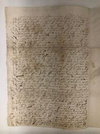
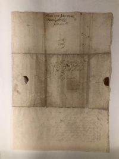

The following shows a letter that was written from James Oliver sent to John Cotton describing the events of the attack on Medfield dated March 14th, 1676.
A transcription of this letter is available courtesy of the Colonial Society of Massachusetts. Scroll down to the letter dated March 14th, 1676.


Click on any of the images to enlarge them.
The letter describes in detail how some members of families in the town were wounded and killed by the surprise attack at daybreak on the 21st. In addition, the letter states that about 50 houses and barns were set on fire, of which 29 were "dwelling houses." In addition, some colonists were taken captive. The letter then describes how the Indians then left, burning the Brigstreet Bridge across the Charles River so the colonists couldn't easily pursue. The letter concludes by describing how it was a day of "deep humiliation" for the residents, and goes on to lament both this attack and sites of violence in other nearby towns such as Groton and Marlborough. After the attack on Lancaster on Lancaster a week before, some additional militia assistance had been sent in, but they were scattered and unable to assemble in time during the surprise attack on the morning of the 21st.